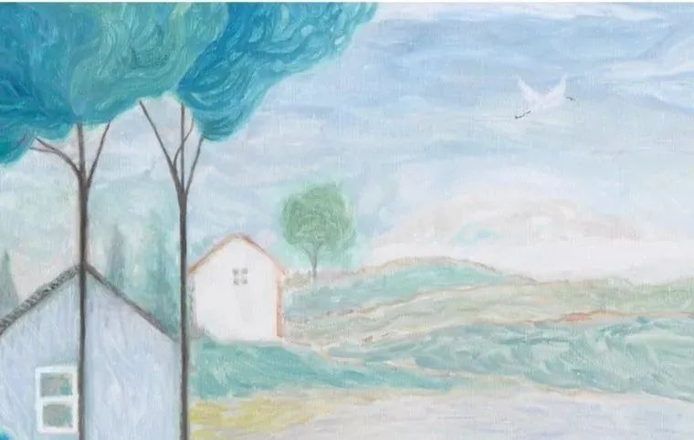
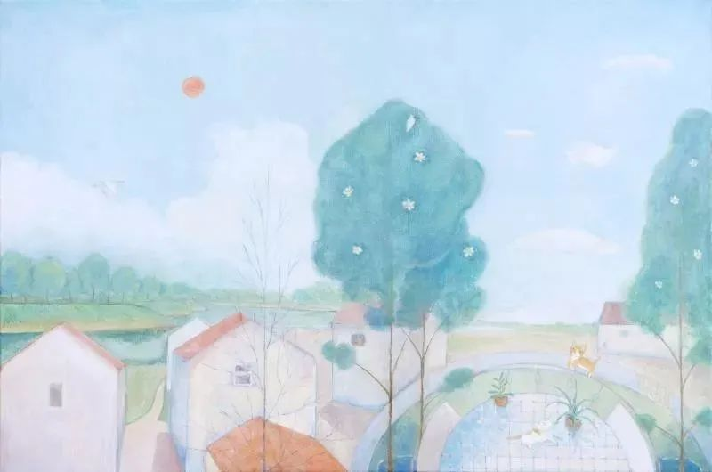
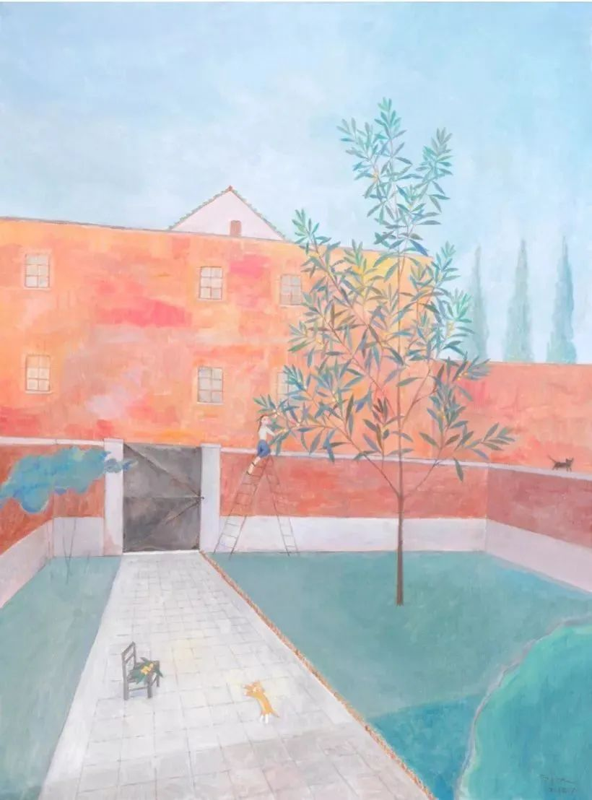

武汉玩家
原文链接 备份链接 这篇文章写的是武汉玩家的故事，它显然不仅仅关于游戏。游戏作为一个精神载体和文化切面，它试图讲述更大的主题：在这场灾难中，我们也有好多次得以窥见一种更本质的人，以及对人类共同命运的指向；而无论是好是坏，我们终究在各种各样 …
过去几年间，作家顾湘一直生活在靠近长江入海口的一处农村里，就连疫情爆发也没有迫使她离开。与城市不同，在农村不必发愁隔离问题，家家户户都有自己种的新鲜蔬菜。对于留守农村的老人来说，疫情似乎丝毫没有激起他们的防范心，他们更关心勘测队在村子四周留下的洞口。

觉得自己渺小一点也挺好
撰文：顾湘
2 月 9 日，我们村也封起来了，用通行证可以出去。村子和小区不一样，没有围墙，没有门，就是路旁边的一堆小房子，这里一堆、那里一簇，就是一个村、一个村的不同大队。所以他们在进村的路口封了一道，西南边的小桥、西北边的桥、北边上大桥的穿林小路，也全都拦了起来，连同一个村的另一个大队也隔断了，每条小路都封上了，他们是认真封的，不是只在村口做做样子。
附近别的村也是如此。比如还有一个村，在我们村通往比较像城市的地方的路上，道路穿过那个村子，那个村封了，人就无法穿过那个村子了。快递小哥不再能依靠导航行进，导航出来的路是不通的。我在封村子的第一天上午、还不知道村子被封的时候，叫过一次家乐福的外送，手机上看见小哥出发了，就往外走出去等他，半路上看见他半路上又折返回去了，心想“怎么回事”，去到村口一看才发现封路了，想到了他碰到的麻烦，顿感过意不去，我对他说我不着急，退货也可以，看你希望怎样我都可以的。结果只见他又重新出发，在地图上绕来绕去，最后给我送来了，人还十分和气开朗，一点也没有因为送了这么麻烦的一单而有怨气。那之后我就不叫外送和外卖了，他们不一定都熟悉这里的路，要自己找路的话太麻烦了。我想我一个住在最角落的村子里的人不要麻烦他们比较好。

村里的其他人怎么办呢？本地人都是一些老人，很多都没有手机和电脑，不过他们有一点是很从容的，就是他们有的是新鲜蔬菜，都有自留地。我再一次感到：人有土地真是太好了。托尔斯泰写过《一个人需要多少土地》，故事的主人公太贪心了，最后需要的土地只有从头到脚六英尺那么小一块，人确实不需要太多土地，但他一开始是没错的，他弄到了一块自己的土地，“可以耕种自己的土地，在自己的土地上晒干草，砍自己的树，在自己的牧场上放牛。当他去耕地或者察看庄稼、草地的长势时，心中充满了欢乐，那里生长的青草与盛开的鲜花在他看来都与众不同”。只要在阳台上自己种出过一点儿什么东西，就会理解这样的心情。如果自己能种出哪怕一小片菜，也能有更加安稳的心。还有《愤怒的葡萄》：“即便他不成功，只要还有地，那他也不会觉得自己渺小。”
不过我的邻居们很快就要没有自留地了，因为要拆迁了。春节之前，旁边的两个大队就已经谈妥，被要求正月半之前搬走。不过因为疫情的关系，现在又不用搬了，出去也租不到房子，无处可搬。听他们说，分给他们的期房要2022年开始造，打算造新房子的地方，老房子还没有拆，而给的租房补贴是一平米12块钱。只剩下我们村还没有正式说过什么时候要拆，“因为我们是‘农民进城’，你们是‘拆迁’，不一样，你们大概会好一点，”旁边大队的人跟我们大队的人讲。我的邻居们“望伊不要搬”，因为拆迁没什么好，并不是传说中的“拆迁就发财了”，发不到财，还很麻烦，他们都七八十岁了，搬家的话会把他们用了几十年的床、衣橱、碗柜、梳妆台、桌椅板凳全部带走，不会买新的，那些家具都非常旧，而且很沉重，铰链都不好了，但木头大概蛮好。什么时候会动迁只有猜测，有人说蚕豆也吃不着了，有人说玉米还能吃两茬。不知道什么时候要搬，地是照种的，“不管什么时候搬，饭总要吃啊”，并不怕白种，种了吃不到。现在，蚕豆已经都长起来了，我想是吃得到蚕豆的了。
一年多以前，要拆迁的事就有点像真的了。周围的厂都拆了，平安夜的前一天晚上停了电，我出去看是只有我家没电还是全村都没电，看见工厂和仓库的高大钢架在高空中佝偻下去，最后缩成一团，像只巨型蜘蛛被吸干，最后变成一个薄而脆的空壳。接着就看了好多天的挖掘机，挖掘机把拆下来的屋顶和墙壁叠起来、压紧，弄成一团团的，很灵活，挖掘机后面跟着很多白鹭，它们怕人，但不怕挖掘机。要拆的建筑在更早以前，都被画上了一个圆圈、里面有个“丁”字或是一个大圆点的符号，想想我很早就看见这个符号了，却没太注意。就像四十大盗在打算好的门上先做好了标记一样。那些墙被推倒之前没多久，却刚粉刷涂白，还请工人画上了许多拙劣的画：荷花、梅花、孔融让梨，以及写上各式各样的标语。即使明天要推倒，今天涂管涂。甚至为了明天要拆，今天特地装修，这也是农民都懂的事情。村里的菜园还装了新篱笆，三百块一截，只有靠路靠外的那一片装，里面没有。我家门口还被挂了一个“最美庭院”的小牌牌，我到村里一看，家家人家都有的。然后工厂就变成了荒地，迅速长满野草，虽然也不是很大，仍然有一点点“旷野”的感觉。那时，村里的老奶奶就带我去看了村子里新打的两个洞，一个在田埂头，上面盖了一块大石头，一个在村边路上，她个子小小的，弯下腰往停着的汽车下面找，找到了就：“喏！喏！看到吗？”那个洞差不多一个饭碗口那么大，中间又填上了，就像用钢笔帽在胳膊上压出一个圈圈，或是牛痘印，“对，就是伊，”她满意地说，这就是有人来勘测过我们村的证据。
春节以前，勘测队的人出现在了村子周围，他们到处打洞，树林里、河岸边，都出现了一种桔红色机械的踪影，就像科幻片里阿凡达们察觉到了外人的到来。老奶奶又去带我看各处地上画的准备打洞的标志。如果他们要在菜地里打洞，就会赔给菜地主人三百块钱，不过他们最后没有在菜地里打洞。那些天，他们在村子东南边搭了绿色的帐篷，住在里面。那些天村子西南边也搭了三次绿色的大帐篷，晚上，帐篷里面透出光，走进还能看见大炉子的火在寒风里呼呼作响、没有颜色，那是一条龙服务做给全村人吃的豆腐饭，饭在另一个大绿棚里吃，二十天里吃了三场。农民越来越少了，老了、死掉、进城、住楼房、无地可种、去超市买菜，有自留地的人和自留地很快都要没了，是不是？
然后好像一切就忽然停了。只有春天的到来不会被停下来。从光照就能感到春天来了，那光真是明媚，还有开了一地的阿拉伯婆婆纳，草地，云，河水，都像是新的，发着光，轻软温柔，大自然比我们久远，我们年轻而易老，一生十分短暂。

在村里，我聊天时随口对老奶奶说，有的地方把人家的猫都杀啦。结果没有想到的是，她马上接口说：“蛮好啊！”我真的很震惊。她的菜园里，猫横七竖八地躺着，闲逛，有的就躺在她脚边，她看起来完全不是憎恨猫的人，平时为人和善、胆小，每天在她这里都是一副很美好的画面，然而在我的各种讲解说明之下，她仍然觉得杀猫的举措她是支持的。虽然我从未对农民和乡村生活有过什么理想化的想象，她的回答仍给我留下了深刻的印象，一个普普通通的人，如此轻易和不以为然地凶残起来。想起高尔基，他写村民：“昨晚他们甚至像一群绵羊一样，谦卑顺从地到教堂祷告，今天他们就能把这个教堂无情地拆毁”（《我的大学》）。她甚至也不是出于要保护好自己的考虑，她根本没有防范心，跟我说话的时候没有戴口罩，站得很近很近，要挨在我身边，我退开一点，她会跟上一步，我转过半个身，她会再跟过来一步，仿佛觉得她认识我，而我又好端端站着，我就是安全的一样。我觉得这些天不适合跟邻居拉家常，减少了与她碰面的情况。
村子封上之前，我出去散步，这里都是荒地，没有人，过年时更没有人，即使没疫情，也是空空荡荡的。偶尔看见人，离得远远的，有人戴着口罩在河边钓鱼。老河弯弯曲曲，新河笔直笔直。我走到土坡上，绕开他们。坡是并不很久以前挖河挖出来的土堆起来的，坡的地方以前也是村庄，村里搬走的人又回到这里，在埋着他们村庄的坡上开垦耕种，坡上被培成一小块一小块、一行一行，种满了蔬菜，人真的是很勤劳、很爱在地里种东西。远远的坡上，还有女人在劳动。树林里都是鸟叫声，很悦耳。假想这是个荒无人烟的世界，然后就好像时间也消失了。越走近外环线，车辆驰过的声音越响，人的世界还在上面跑着。有天下午我在河边突然被一个鸟的叫声吸引，它像一个从小橡皮球里捏气的声音：噗叽噗叽噗叽噗叽噗叽噗叽噗，一般完整的就是这样一句，十三声，有时也会短一点。接着，路的另一边，另一片小树林里，一只鸟发出了一样的叫声，它们呼应着，第一只鸟叫一句，第二只鸟也叫一句，来回叫，我听了很久。鸟为什么叫呢，想起了《苏亚人为什么唱歌》，还想起特德姜的《大寂静》，最后那只鹦鹉留给人类一句话：“保重，我爱你。”
路都封了以后，我还是在午后出去散步，散步的区域好像一下子变得十分局限了。但第二天，我就忽然看见一个先头还跟我走在同一条路上的姑娘，仍然拿着手机看着散步，却走在围墙外面。她在外面也只是看手机散步，我觉得她肯定不是翻越障碍出去的，那就是说有方便走出去的路，我很快找到了那条路，来到了大河边。我在这里住了好几年，平时已经算得上非常爱闲逛，仍然有我还没走过的路，这几天我把它们都走了一遍，趁着它们统统消失以前。有些路可能以前不好走，这几天被人走了出来，于是从一片纷杂的一枝黄花丛中、河畔草地上或是别的什么地方显现出来。树林真是四通八达，你无法将野地包围起来，因为它就是那么野。我试着不翻围墙能走多远，结果发现能去到跟从前一样的远，哪里都能去，然后我又悄悄转回来。我去到上一次见到蒲棒喷絮、一只野鸭惊飞而起的水边，去到原来去的坡上，远远的仍有人在劳动。钓鱼的人还在林中钓鱼，单独一个一个，非常稀疏，像隐士一样。豚草带刺的种子沾满了我的裤腿。我还看见一群白腰文鸟，小小的，栗褐色，肚子白白的，像些个短短的梭子，在很大一蓬干枯伏倒的狗尾巴草之间穿来穿去，啄食草籽，我走过去一点点，它们也不呼啦一下飞走，蹦蹦跳跳认真地吃。看到它们可真高兴啊。可是树林里养蜂人的小木屋关着，没有人，也没有蜜蜂，他们没有来，尽管油菜花已经开了。

回家以后就看看书，这几天重新看了一些契诃夫小说，还有一本《时间的螺旋——贝壳里的人类史》，看一看人可以那么聪明和明亮，再看一看世界之广阔、时间之深邃——后面那本书里还有人参与其中。忽然又想到前面引的“不会觉得自己渺小”，我觉得人有时候觉得自己渺小一点也挺好，人确实渺小，不应时时刻刻觉得自己顶天立地。斯坦贝克不是我特别喜爱的作家。
除了看书，我还玩一个叫“baba is you”的游戏，这是一个推箱子类的小游戏，但令人赞叹。我们心里也有一些谜团，可以靠玩游戏来把它推解开。它的世界有许多规则，而规则像诗一样：巴巴是你，墙不能动石头可以推，玫瑰是红色的，爱是热的，你是融化的，爱是胜利。我通过推动词语来改变规则，有时：巴巴是我，墙也是我，在墙变成了我以后，我——整座墙——朝胜利走去。那一幕是令我感动的。

疫情不仅深深影响了我们当下的生活，也将长期占据着我们的记忆、改变我们的思想。我们需要更多双眼睛，继续观察、记录时代中的危机与转变。这些真挚而沉重的纪录，我们会留存它。
投稿邮箱：anonymous@owspace.com
Launched in 2009 by an independent bookstore in Beijing, One-Way Street is a quarterly journal that publishes essays, fiction, poetry, art, and criticism by emerging writers and artists from around the world.
本文插图来自《赵桥村》，顾湘绘。

《单读 23 · 破碎之家》已经上市****
*它又意外地应景了*
***点击小程序购买阅读***
原文链接 备份链接 这篇文章写的是武汉玩家的故事，它显然不仅仅关于游戏。游戏作为一个精神载体和文化切面，它试图讲述更大的主题：在这场灾难中，我们也有好多次得以窥见一种更本质的人，以及对人类共同命运的指向；而无论是好是坏，我们终究在各种各样 …
原文链接 备份链接 本文是协作者在“农民工抗疫救援行动”中，针对困境农民工家庭开展的个案访谈之一，旨在快速识别疫情中的脆弱人群及其需求，为疫情防控和救援工作提供参考，我们整理出来与你分享。 疫情下的深呼吸 ——困境农民工家庭个案实录（八） …
原文链接 备份链接 “ - 疫 情 之 下 - 如果没有按下全国的紧急暂停键，所有居民足不出户，所有像老陈这样的物业人员全力守护的最后一公里，也没有现在渐近的明朗和希望。 ” 1 大年30那天中午，重庆渝北某小区的物业管家老陈在家和家人 …
原文链接 备份链接 采访、撰文 | 吴楠 投稿邮箱 | gayspot_edit@163.com 马志远是2020年年初这一次来势汹汹的新冠肺炎疫情中的一名默默无闻的志愿者。虽然在远离疫区中心的地方，但他看着这个城市街头的人流量只有原来的 …
原文链接 备份链接 十几天没有出过小区门了。我今天下午戴上口罩、护目镜和手套，步行到四德公园滑滑板。 我拿着滑板正常进入，开始滑板。期间没有接触任何人。四德公园今天人比想象的要多，还看到约4个人在跑步的时候没有戴口罩。 坐在路边休息的时 …